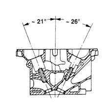
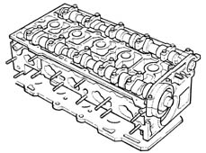

CYLINDER HEAD/S - VARIOUS OPERATIONS
- Path
- Descriptions > 10 ENGINE > 1016 CYLINDER HEAD(S) > 1016E CYLINDER HEAD/S - VARIOUS OPERATIONS > CYLINDER HEAD/S - VARIOUS OPERATIONS
- Kind
- system description
- Applies to
- engines: 2.0 TB; all production periods
- Interactive page
- https://sloeber94.github.io/elrnDB-lThss/en/#/617043
Applies to: engines: 2.0 TB; all production periods
CYLINDER HEAD
Specifications
Function
The cylinder head is a structural part of the engine that contains and supports timing system components.
Composition
Structure
The cylinder head is one-piece in aluminium alloy and silicone.
The four valves per cylinder are fitted in guides arranged in a V at an angle of 47° and controlled by two camshafts via hydraulic tappets.

The valve guides are press-fitted in seats on the cylinder head with interference and the inner diameter is adjusted after fitting using a special reamer.
The gasket between cylinder head and crankcsae is made out of aramidic fibre and the head does not require retightening throughout the engine life.
